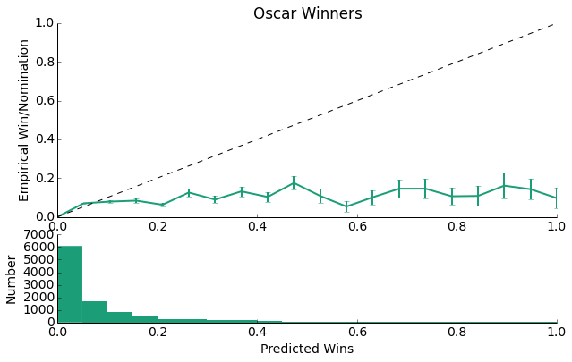
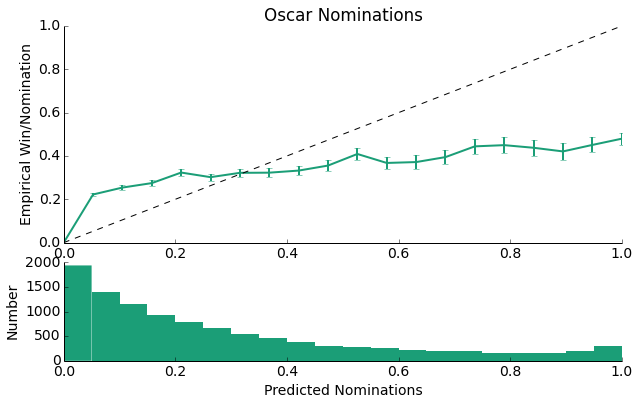
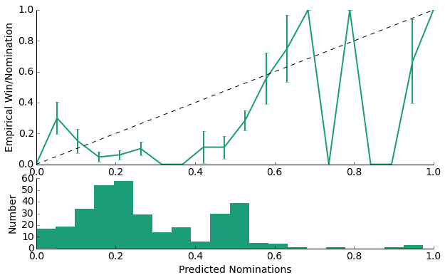
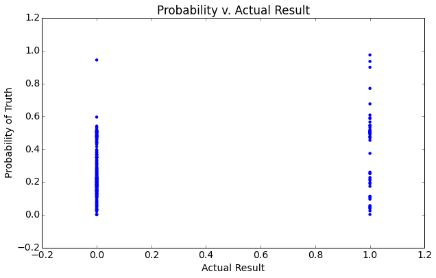
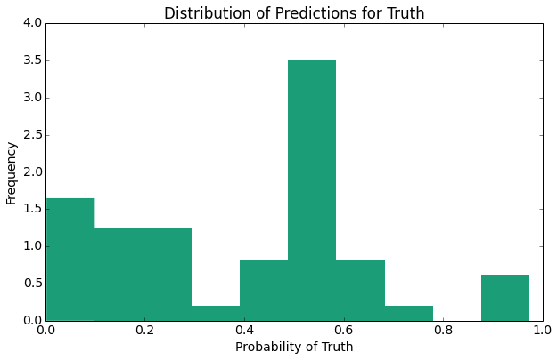
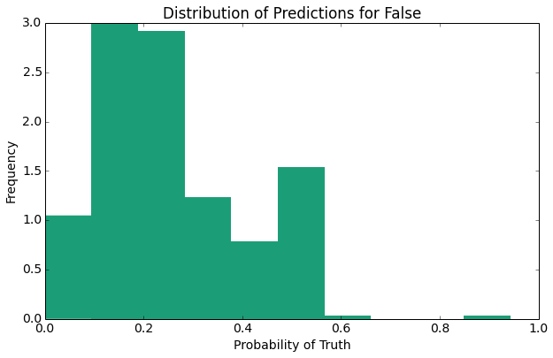
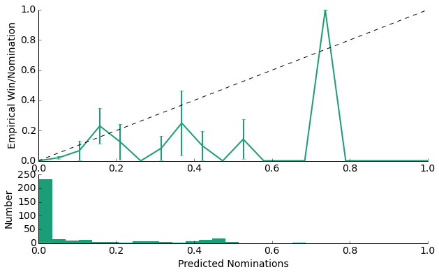
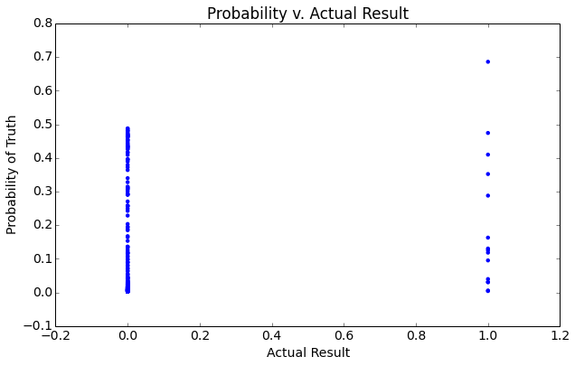
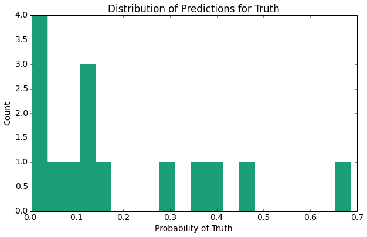
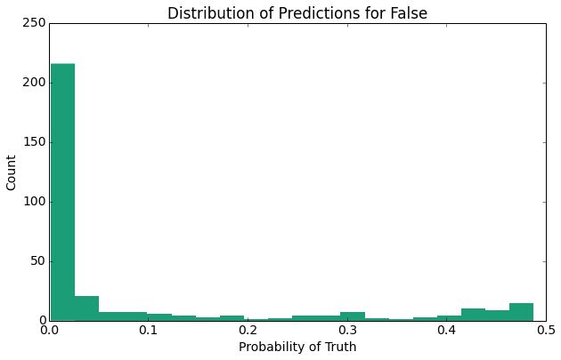

We will now use a Naive Bayes classifier to build a prediction model for whether a movie will be nominated for an oscar. From there we will try to pick from among the nominees to get a winner.
Before we began our analysis, we first had to add to our dataframe information about the results of the oscar nominations and winners. Here we add two columns to our dataframe: one for the winner, and one for the nomination. We add these by representing this information as a binary win/loss nomination/not nomination.
We next ran a count vectorizer over the body of the reviews to convert the textual content of the reviews to numerical counts of word frequencies. Following this, we split the data into two a training set and a testing set. In this way, we planned to use our training set to train our model and then use the testing set to evaluate its accuracy. But to split the data, we could either randomly split the reviews, or we could split and keep each year in tact. We chose to do the latter to ensure we had equal representation for all oscars in a given year.
Now using our model to make predictions against the test set, we get the following results:
Accuracy on winner train data: 90.87% Accuracy on winner test data: 90.38% Accuracy on nominee train data: 88.91% Accuracy on nominee test data: 71.32%
The winner test data has a slightly lower accuracy than the winner train data, so it is slightly overfit (but this is really imperceptible); however, the difference between the score for the nominiee data in the training set and the testing set it close to 20% meaning this is significantly more overfit. The nominee data has significantly more entries than the winner data, so the opportunity to overfit here is much larger, and this is indeed what we observe.
This model seems to work with good accuracy for the winner data in terms of predicting accuracy, but we can still dramatically improve for the test data. Up until this point, we have been assuming all the different reviews are weighted equally when, in reality, this shouldn't be the case. We will thus next weight each of the samples by a modified zscore. We will use the overall score as the mean for the reviews (grouped by movie) instead of the mean of the sample here assuming that those samples with the lowest distances from the overall score should be weighted the highest. We then normalized the scores and reversed them so that those scores with the zscores closest to 0 then have the greatest weights.
Reconstructing our model, we get the following results:
Accuracy on winner train data: 89.65% Accuracy on winner test data: 90.97% Accuracy on nominee train data: 84.17% Accuracy on nominee test data: 71.52%
The model is still not, perfect but the nominee data has become much less overfitted. Now that we had a weighted model, we then cross-validated it, choosing the best smoothing parameters by looping through possible values and choosing the best parameters. Then reconstructing the model with the new parameters, we sought to view its calibration:
As we can see, for the majority of the data, the model is underconfident as it predicts values that are much lower than the line y = x. This is likely a direct result of the fact that, as can be seen by the lower plot, this model predicts losses much more than it predicts wins. With such little oscar win data (there are only a handful of oscars per year), this isn't that surprising. With this logic, we should expect the confidence of the model to be higher.
And indeed this is what we observe with the model's predictions now falling closer to the y = x line than was the case for the Oscar Winner data. Here we had more data with which to train our model, so we do observe more predicted nominations as opposed to predicted wins above.
Although we've assumed it, from this data alone, we can't actually tell whether our model is predicting well the positive, negatives, or both. We then determined the percent of our predictions that were true positives, false positives, true negatives, and false negatives:
For Oscar Wins: True positive rate: 6.28% False positive rate: 93.72% True negative rate: 95.73% False negative rate: 4.27% For Oscar Nominations: True positive rate: 28.08% False positive rate: 71.92% True negative rate: 80.56% False negative rate: 19.44%
From these results it is clear that in both cases, these models are much better at predicting negatives than positives with a true negative rate of 96.6% and 82.7% percent. For both, though, we also have a high false positive rate meaning that those movies the models report as either winning an oscar or getting a nomination are not really winning. As we predicted above, the nomination model does a better job predicting true positive nominations than does the winner one simply because it contains more data and there are more nominations possible every year (meaning it has a lower probability of getting it wrong when it chooses a nomineed as opposed to a winner).
Logistic Regression, which is used to predict a binary result, is used for the classification of data taken from Box Office Mojo:
Logistic Regression Test: Accuracy on train data: 84.40% Accuracy on test data: 82.21%
We have an interesting result, a very high accuracy! Let us explore this a little further by taking a look at the sensitivity (true positive) and specificity (true negative) rates:
Sensitivity: 44.90% Specificity: 88.81%
As expected we notice that the incidence of true positives is lower than the our overall accuracy, because we have a much larger number of negatives (non-nominees). Moving forward, we will be most interested in correctly predicting the nominees, and will be more interested in the instance of true-positives. As such, we below explore ways in which we can maximize sensitivity.
Due to the extremely small sample size of oscar nominees, the results of this analysis are subject to the test and train years utilized for analysis. However, a recurring result across multiple trials is the inclusion of Total Gross Revenue, Opening Revenue, and Number of Theaters at the opening.
As a second-optimization procedure, we manipulated the regularization parameter, what we refer to as the L2 Regularization Parameter. As the L2 Regularization Parameter helps to minimize overfitting and our data does not suffer from much overfitting (as reported above), the L2 regularization parameter was relatively stable near 1. Furthermore the large values used in the analysis cause the manipulation of the L2 regularization to not affect our true positive rate until it get very small. (Note: The regularization parameter is the inverse of regularization strength.)
Now let's visualize this a little more explicitly:
   The above plots provide several expected results indicate one primary result, the distribution of the probability predictions for false (non-nominee) is closer to 0 than the distribution of probability predictions for the (nominee).
Next we perform a combined analysis using a logistic regression model. This logistic model is combines the best predictors identified within the Box Office Mojo data with predictions made by reviews taken from IMDB and Rotten Tomatoes.
Summary Statistics (w/o IMDB Scores or RT Scores) Train Accuracy: 84.5603271984, Test Accuracy: 85.626911315 True Pos. Rate: 21.9858156028, True Neg. Rate: 96.3095238095 Summary Statistics (w/ just IMDB Scores) Train Accuracy: 86.1519607843, Test Accuracy: 86.2676056338 True Pos. Rate: 25.3846153846, True Neg. Rate: 97.2299168975 Summary Statistics (w/ just RT Scores) Train Accuracy: 84.2657342657, Test Accuracy: 84.7900113507 True Pos. Rate: 22.4637681159, True Neg. Rate: 96.3660834455 Summary Statistics (w/ IMDB Scores & RT Scores) Train Accuracy: 85.7707509881, Test Accuracy: 85.6787048568 True Pos. Rate: 25.1968503937, True Neg. Rate: 97.0414201183   
As evidenced by the summary statistics above, the true positive rate is increased upon the addition of review data taken from Rotten Tomatoes and IMDB. As another expected result, the histogram of probabilities predictions for movies that did receive a nomination has a larger right tail than does the histogram of probability predictions for those movies that did not receive a nomination. Overall, our calibration plot (though noise) appears to follow the linear trend of y = x.